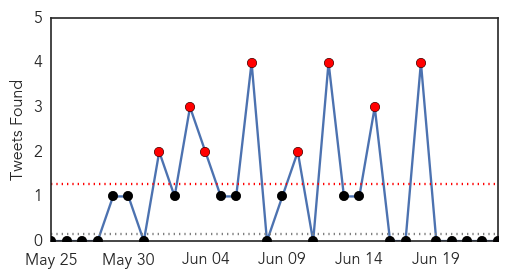

MERS
30-Day Web Trend
24 alerts, 1 warnings

30-Day Twitter Trend
13 alerts, 10 warnings

Article Locations

Article Confidences

Top Articles:
- 1.000
- Stay alert
- 1.000
- Korea reports 3 more cases, healthy birth after MERS
- 1.000
- Are we following the correct policy?
- 0.999
- Keeping calm
- 0.998
- Confirmed #MERS case
- 0.997
- SGGP English Edition- Vietnam strengthens education of public health about MERS- CoV
- 0.996
- 175 Thais Exposed To Middle East Respiratory Syndrome
- 0.996
- Trickle of new cases lifts South Korea MERS total to 172
- 0.995
- Assessing the Threat of MERS -- Occupational Health & Safety
- 0.994
- MERS outbreak exposes South Korean government’s lack of preparation
- 0.994
- MERS case in Thailand puts Bhutan on high alert
- 0.994
- WHO on five Saudi MERS cases
- 0.989
- H5N1: Orchestrated scientific collaboration: Critical to the control of MERS-CoV
- 0.972
- Lam Dong: Suspected MERS-CoV case quarantined
- 0.945
- Russian tourist quarantined for MERS check
- 0.904
- Fewer Pinoys visiting South Korea
- 0.895
- Cambodia on high alert after 1st case of MERS found in Thailand
- 0.892
- Cambodia on high alert after 1st case of MERS found in Thailand - Xinhua
- 0.810
- With South Korean tourists arriving in droves, Boracay jetty port seeks DOH help on MERS-COV scare
- 0.728
- Koreans in Baguio on alert against MERS
- 0.675
- Samsung’s Lee Apologizes for MERS Outbreak at Company Hospital
- 0.581
- Samsung apologizes for MERS outbreak at company hospital
Top Tweets:
- 0.771
- AFD blog `WHO MERS Update – Saudi Arabia' MERS-CoV http://t.co/VZucmCqdll
- 0.567
- AFD blog `Korean MERS Cluster Adds 3 More Cases (Total =175)' MERS-CoV http://t.co/8GWSyXfr43
Dengue Fever
30-Day Web Trend
3 alerts, 6 warnings

30-Day Twitter Trend
3 alerts, 0 warnings

Article Locations

Article Confidences

Top Articles:
- 0.997
- Yemen's health situation 'disastrous', officials say
- 0.984
- Int'l aid delivered to Yemen to cope with health crisis
- 0.973
- WHO: 3,000 cases of dengue fever in Yemen reported since March
- 0.965
- Dengue cases with more complicated symptoms this year, says Health Ministry
- 0.957
- Hard Times: 'Yemen has over 3,000 Dengue cases, figure expected to get higher'
- 0.924
- Orange County officials to talk mosquito safety, prevention
- 0.922
- Farsnews
- 0.919
- More than 3,000 dengue cases in Yemen since March: WHO
- 0.904
- WHO concerned about rise in dengue cases in Yemen
- 0.903
- Health Ministry: Malaysia prepared to face MERS, but Dengue threat remains - Nation
- 0.855
- Experts Warn Of Mosquito Infestation This Summer
- 0.833
- The dreaded Dengue returns and you can’t count on platelets
- 0.764
- 39 killed in south Yemen clashes
- 0.654
- MOH intensifies Fogging Campaign against Mosquito-Borne Virus
- 0.618
- Country faces largest dengue epidemic ever
Top Tweets:
- 0.718
- Flavivirus news: At least 3000 suspected Dengue fever cases reported in Yemen – UN health ... -... http://t.co/yBZwfiGpCj pathogenposse
- 0.650
- Flavivirus news: Thousands of Cases of Dengue Fever Reported in Yemen: UN - Newsweek: NewsweekT... http://t.co/wmwFxVuKdF pathogenposse